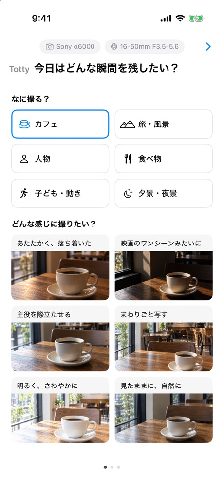
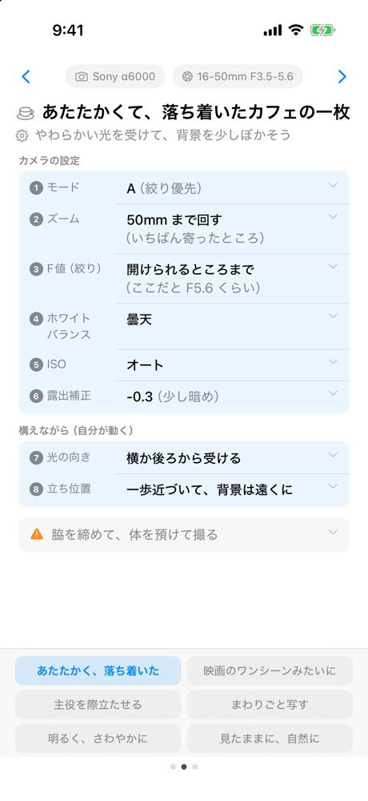
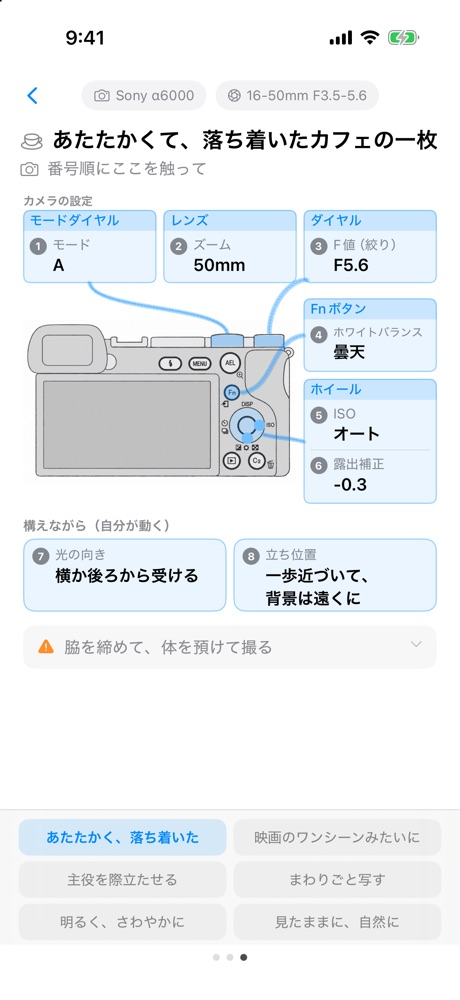

Totty
カメラは楽しい。
でも設定がわからず、いい写真が撮れない。
でも、設定を勉強するほどでもない。
Tottyは、撮りたいものと雰囲気を選ぶと、まず試してみるカメラの設定と、撮影のコツを教えてくれるiPhoneアプリ。
カメラの用語を覚えなくても大丈夫。カメラのどこを触ればいいかも、絵でわかります。
使い方
1
なに撮る？ どんな感じに撮りたい？
カフェ、旅、人物…。撮りたいものを選んで、写真を見ながら雰囲気を選びます。

2
設定と撮影のコツが出る
まず試してみる設定が、番号順に並びます。光の向きや立ち位置など、構えながら気をつけることも。

3
カメラのどこを触るかも
その設定がカメラのどのボタンにあるか、絵で見られます。

こんな人に
- ミラーレスや一眼を買ったけれど、オート中心
- もう少し、いい感じに撮りたい
- 設定は、よく分からない
- でも、本格的に勉強するほどではない
Tottyは、いま開発中です
公開やテストの案内を受け取りたい方は、こちらから登録してください。
いまはSony α6000で試しています。ほかのカメラをお使いの方も、ぜひ教えてください。
フォームが表示されないときは、こちらから開いてください。
いただいたメールアドレスは、Tottyの公開やテストのご案内にだけ使います。ほかの目的には使わず、第三者に渡すこともありません。案内が不要になったら、届いたメールに返信するだけで止められます。